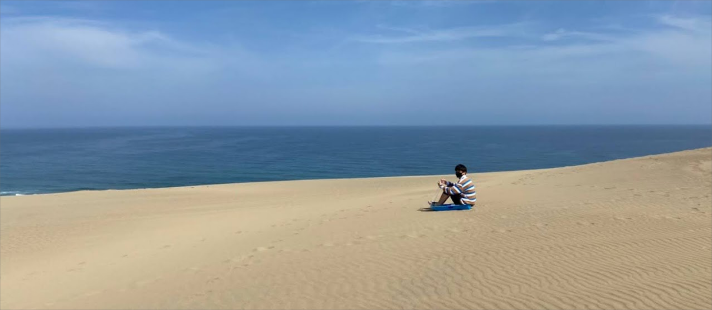
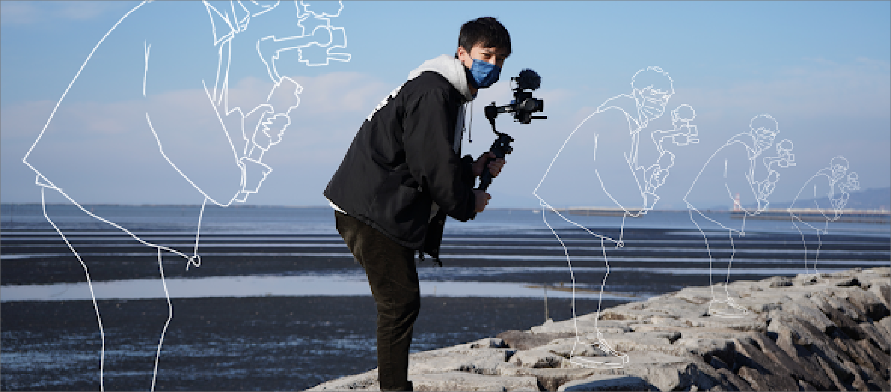
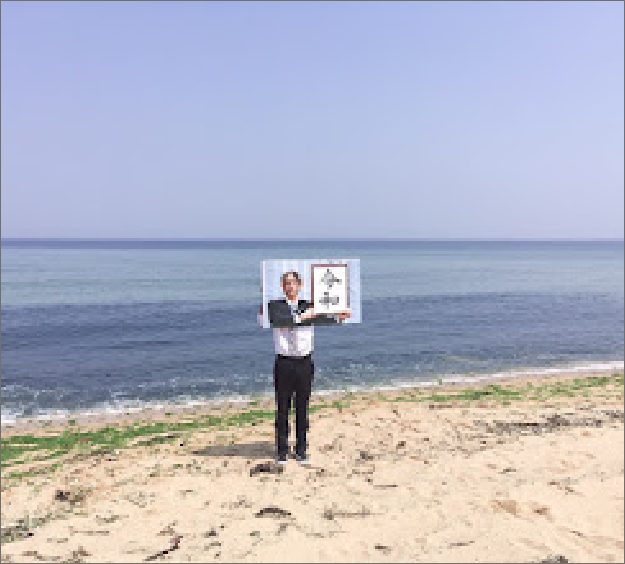
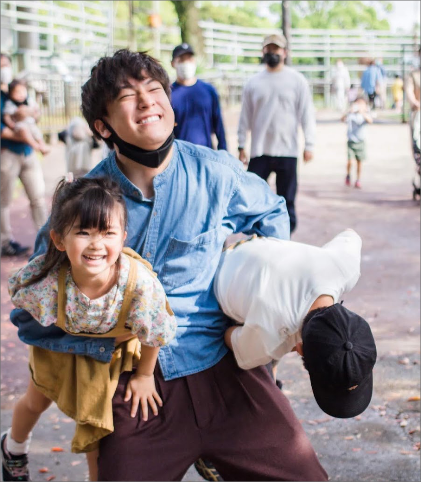
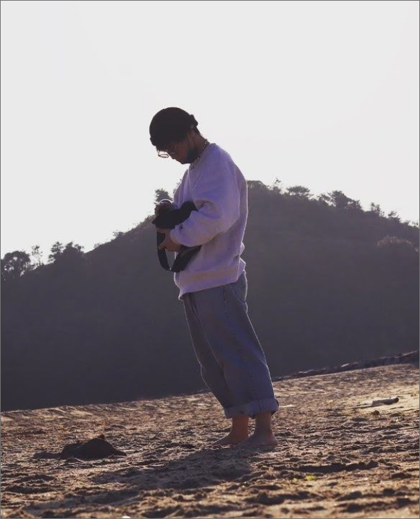

岸不動のポートフォリオ

illustration
写真からイラストを描いたり、写真にイラストを描き足す事を得意としています。他にも季節のイラストや、adobe illusutraterを使ったイラストなどを描いています。


FUDO is strong men. 不動は力持ちです
今までの人生は力強く生きてきました。１０人兄弟の末っ子として生まれて、多くの経験をしてきました。家庭も裕福ではなく、最新のゲーム機はありませんでした。いつも遊んでいたのは手作りのゲームやブロック。何もなかったとしても、私の心は満たされていました。その経験や想像力が今に生きていると実感しています。

FUDO is comedian. 人を笑わせる事が好きです。
常に面白いことを意識して過ごしています。デザインをするときにも笑ってもらえるようなひと工夫をするようにしています。笑ってもらえることが自分にとっての幸せですし、他の人の幸せにも繋がれればと思います。
FUDO is not FUDO. 不動は不動ではありません
アイデアを常に流動的なものにできるよう意識しています。5Gが普通のものとなったら、多くの情報を瞬間的に読み込めるようになります。そのときにWebはどう進化できるのか。まだ定義の定まっていない5G時代ですが、時代に対応できるよう、常識を根底から覆せるようなデザインができればと思います。熊本デザイン専門学校で培ったことは、単なる技術だけではなく、思考力の部分もあります。情報をデザインするということの意味を御社で学んでいけたらと思います。

岸野朗の動画をチェックする
SNSにも普段の日常を投稿しています
Offcanvas